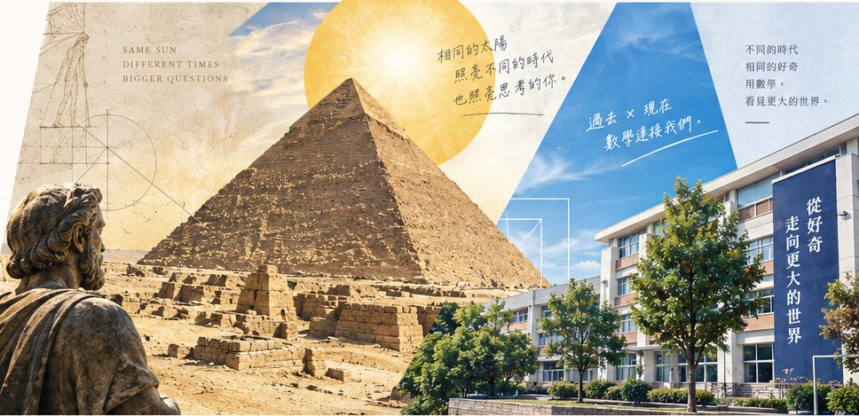

測量遠征：一束光，丈量一個世界
「如果不能攀爬金字塔，你會怎麼測量它？」本專案以古希臘數學家泰勒斯測量埃及金字塔的歷史傳奇為起點，打造跨時空的數位數學探究體驗。學生將跟隨泰勒斯的影子思維，貫穿三大現實生活測量挑戰：藉由太陽平行光與標竿影長求解「向上量不到的高樓」、透過水平與鉛直基準剖析「斜向難測的坡度高差」，以及運用直角與三點共線對準克服「走不過去的河對岸距離」。系統內建動態模擬器、三層式鷹架提示、學生小組填寫軌跡與學習歷程報告自動匯出功能，並支援無縫同步教師 Google 試算表戰情儀表板，完美實踐新課綱探究與素養導向的數位課堂革新。
View Project